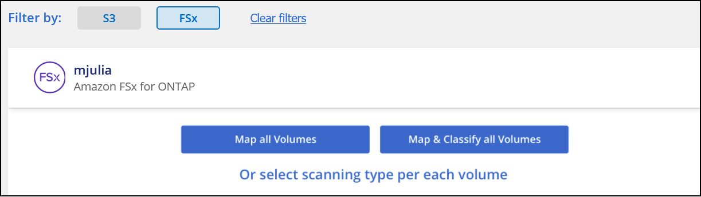

请求文档变更
请求文档变更 在 GitHub 上编辑
在 GitHub 上编辑 提供者指南
提供者指南开始使用适用于 Amazon FSX for ONTAP 的 Cloud Data sense
请完成几个步骤，开始使用 Cloud Data sense 扫描 Amazon FSX for ONTAP 卷。
开始之前
-
您需要在 AWS 中使用主动连接器来部署和管理 Data sense 。
-
您在创建工作环境时选择的安全组必须允许来自云数据感知实例的流量。您可以使用连接到 FSX for ONTAP 文件系统的 ENI 来查找关联的安全组，并使用 AWS 管理控制台对其进行编辑。
快速入门
按照以下步骤快速入门，或者向下滚动以查看完整详细信息。
在扫描 ONTAP 卷的 FSX 之前， "您必须具有配置了卷的 FSX 工作环境"。
"在 Cloud Manager 中部署 Cloud Data sense" 如果尚未部署实例。
单击 * 数据感知 * ，选择 * 配置 * 选项卡，然后为特定工作环境中的卷激活合规性扫描。
启用 Cloud Data sense 后，请确保它可以访问所有卷。
-
云数据感知实例需要与 ONTAP 子网的每个 FSX 建立网络连接。
-
确保以下端口已对 Data sense 实例开放。
-
对于 NFS —端口 111 和 2049 。
-
对于 CIFS —端口 139 和 445 。
-
-
NFS 卷导出策略必须允许从 Data sense 实例进行访问。
-
Data sense 需要 Active Directory 凭据才能扫描 CIFS 卷。+ 单击 * 合规性 * > * 配置 * > * 编辑 CIFS 凭据 * 并提供凭据。
选择或取消选择要扫描的卷， Cloud Data sense 将开始或停止扫描这些卷。
正在发现要扫描的 FSX for ONTAP 文件系统
如果您要扫描的适用于 ONTAP 的 FSX 文件系统尚未作为工作环境在 Cloud Manager 中，则可以此时将其添加到画布中。
部署 Cloud Data sense 实例
"部署 Cloud Data sense" 如果尚未部署实例。
您应将 Data sense 部署在与 Connector for AWS 和要扫描的 FSX 卷相同的 AWS 网络中。
-
注意： * 扫描 FSX 卷时，当前不支持在内部位置部署 Cloud Data sense 。
只要实例具有 Internet 连接，就会自动升级到 Data sense 软件。
在您的工作环境中实现云数据感知
您可以为 ONTAP 卷的 FSX 启用云数据感知。
-
在 Cloud Manager 顶部，单击 * 数据感知 * ，然后选择 * 配置 * 选项卡。

-
选择要如何扫描每个工作环境中的卷。 "了解映射和分类扫描"：
-
要映射所有卷，请单击 * 映射所有卷 * 。
-
要映射所有卷并对其进行分类，请单击 * 映射并分类所有卷 * 。
-
要自定义每个卷的扫描，请单击 * 或选择每个卷的扫描类型 * ，然后选择要映射和 / 或分类的卷。
请参见 在卷上启用和禁用合规性扫描 了解详细信息。
-
-
在确认对话框中，单击 * 批准 * 以使 Data sense 开始扫描卷。
Cloud Data sense 开始扫描您在工作环境中选择的卷。一旦 Cloud Data sense 完成初始扫描， " 合规性 " 信息板将显示结果。所需时间取决于数据量—可能需要几分钟或几小时。
验证 Cloud Data sense 是否有权访问卷
通过检查网络，安全组和导出策略，确保 Cloud Data sense 可以访问卷。
您需要为 Data sense 提供 CIFS 凭据，以便它可以访问 CIFS 卷。
-
在 Configuration 页面上，单击 * 查看详细信息 * 以查看状态并更正任何错误。
例如，下图显示了由于 Data sense 实例与卷之间的网络连接问题，卷 Cloud Data sense 无法扫描。

-
确保云数据感知实例与包含适用于 ONTAP 的 FSX 卷的每个网络之间存在网络连接。

对于适用于 ONTAP 的 FSX ， Cloud Data sense 只能扫描与 Cloud Manager 位于同一区域的卷。 -
确保以下端口对 Data sense 实例开放：
-
对于 NFS —端口 111 和 2049 。
-
对于 CIFS —端口 139 和 445 。
-
-
确保 NFS 卷导出策略包含 Data sense 实例的 IP 地址，以便它可以访问每个卷上的数据。
-
如果使用 CIFS ，请为 Data sense 提供 Active Directory 凭据，以便它可以扫描 CIFS 卷。
-
在 Cloud Manager 顶部，单击 * 数据感知 * 。
-
单击 * 配置 * 选项卡。
-
对于每个工作环境，单击 * 编辑 CIFS 凭据 * ，然后输入 Data sense 访问系统上 CIFS 卷所需的用户名和密码。
这些凭据可以是只读的，但提供管理员凭据可确保 Data sense 可以读取任何需要提升权限的数据。这些凭据存储在 Cloud Data sense 实例上。
输入凭据后，您应看到一条消息，指出所有 CIFS 卷均已成功通过身份验证。
-
在卷上启用和禁用合规性扫描
您可以随时从 " 配置 " 页面在工作环境中启动或停止仅映射扫描或映射和分类扫描。您也可以从仅映射扫描更改为映射和分类扫描，反之亦然。建议您扫描所有卷。

| 收件人： | 执行以下操作： |
|---|---|
在卷上启用仅映射扫描 |
在卷区域中，单击 * 映射 * |
对卷启用完全扫描 |
在卷区域中，单击 * 映射和分类 * |
禁用对卷的扫描 |
在卷区域中，单击 * 关闭 * |
在所有卷上启用仅映射扫描 |
在标题区域中，单击 * 映射 * |
对所有卷启用完全扫描 |
在标题区域中，单击 * 映射和分类 * |
禁用对所有卷的扫描 |
在标题区域中，单击 * 关闭 * |
|
|
只有在标题区域中设置了 * 映射 * 或 * 映射和分类 * 设置后，才会自动扫描添加到工作环境中的新卷。如果在标题区域中设置为 * 自定义 * 或 * 关闭 * ，则需要在工作环境中添加的每个新卷上激活映射和 / 或完全扫描。 |
扫描数据保护卷
默认情况下，不会扫描数据保护（ DP ）卷，因为它们不会公开在外部，并且 Cloud Data sense 无法访问它们。这些卷是从适用于 ONTAP 的 FSX 文件系统执行 SnapMirror 操作的目标卷。
最初，卷列表会将这些卷标识为 Type * dp* ，并显示 Status * 未扫描 * 和 Required Action * Enable Access to DP volumes* 。

如果要扫描这些数据保护卷：
-
单击页面顶部的 * 启用对 DP 卷的访问 * 。
-
查看确认消息，然后再次单击 * 启用对 DP 卷的访问 * 。
-
系统将启用最初在源 FSX for ONTAP 文件系统中创建为 NFS 卷的卷。
-
最初在源 FSX for ONTAP 文件系统中创建为 CIFS 卷的卷需要输入 CIFS 凭据才能扫描这些 DP 卷。如果您已输入 Active Directory 凭据，以便 Cloud Data sense 可以扫描 CIFS 卷，则可以使用这些凭据，也可以指定一组不同的管理员凭据。

-
-
激活要扫描的每个 DP 卷 与启用其他卷的方式相同。
启用后， Cloud Data sense 会从已激活进行扫描的每个 DP 卷创建一个 NFS 共享。共享导出策略仅允许从 Data sense 实例进行访问。
-
注意： * 如果在最初启用对 DP 卷的访问时没有 CIFS 数据保护卷，稍后再添加一些，则配置页面顶部会显示 * 启用对 CIFS DP* 的访问。单击此按钮并添加 CIFS 凭据，以便能够访问这些 CIFS DP 卷。
|
|
Active Directory 凭据仅在第一个 CIFS DP 卷的 Storage VM 中注册，因此将扫描该 SVM 上的所有 DP 卷。驻留在其他 SVM 上的任何卷都不会注册 Active Directory 凭据，因此不会扫描这些 DP 卷。 |